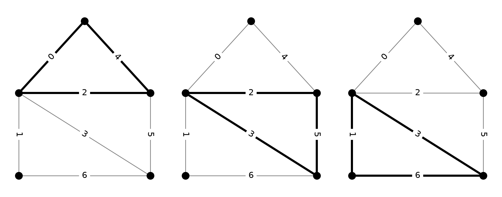
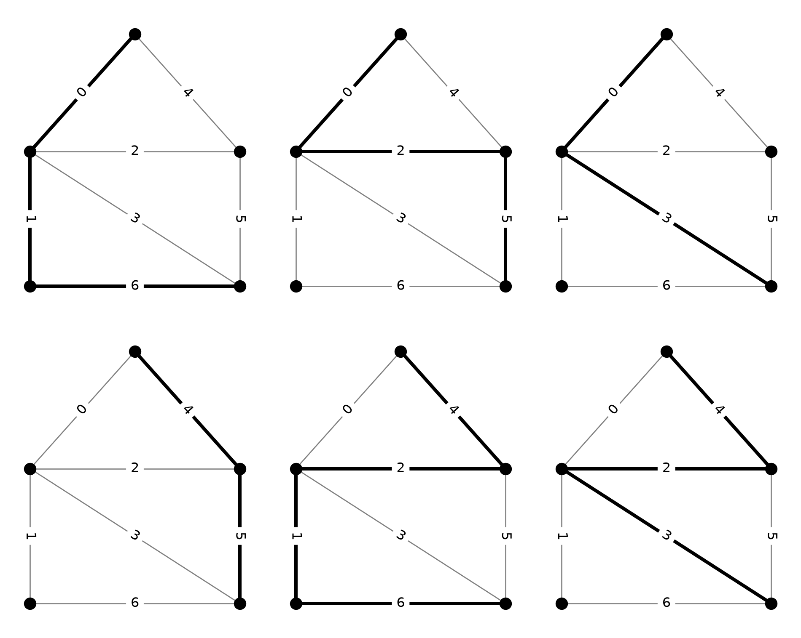
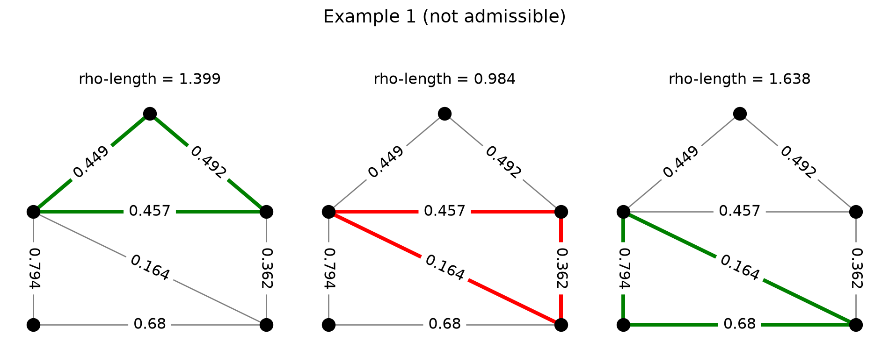
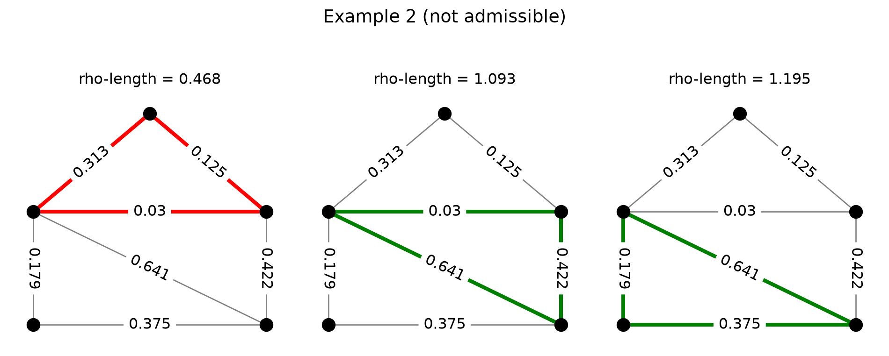
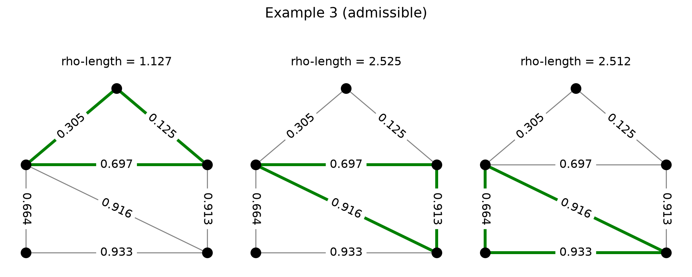
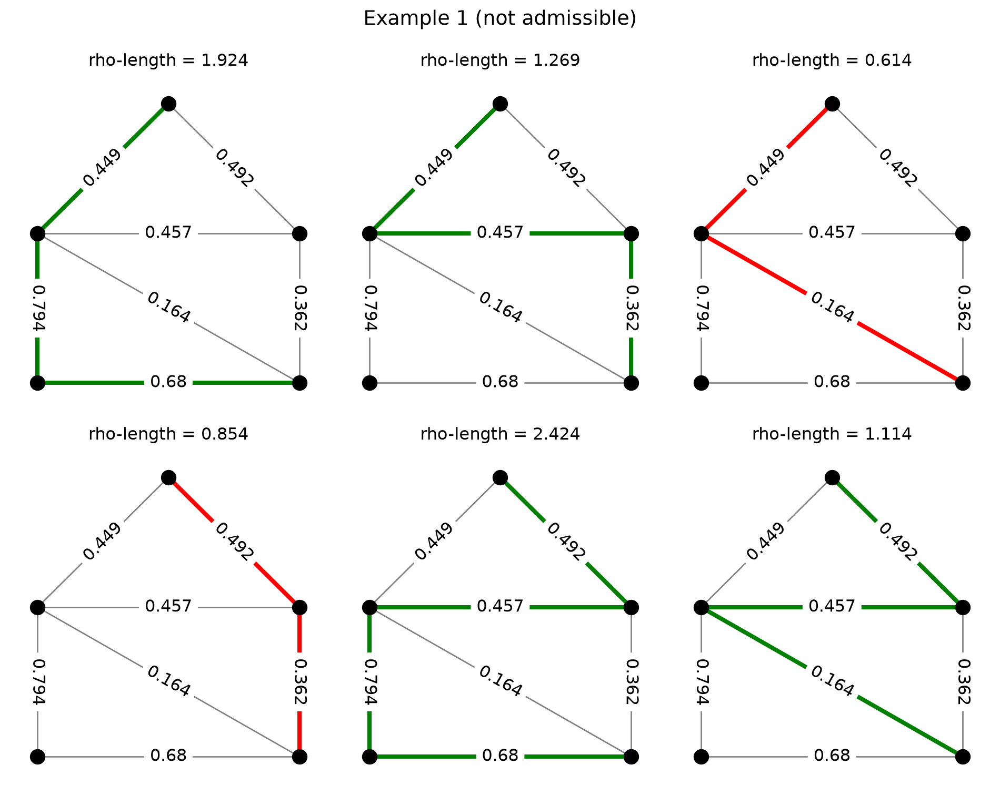
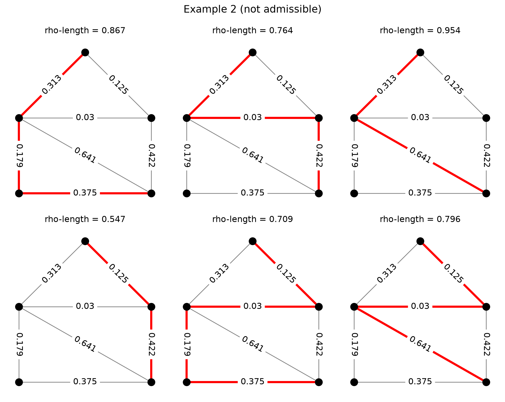
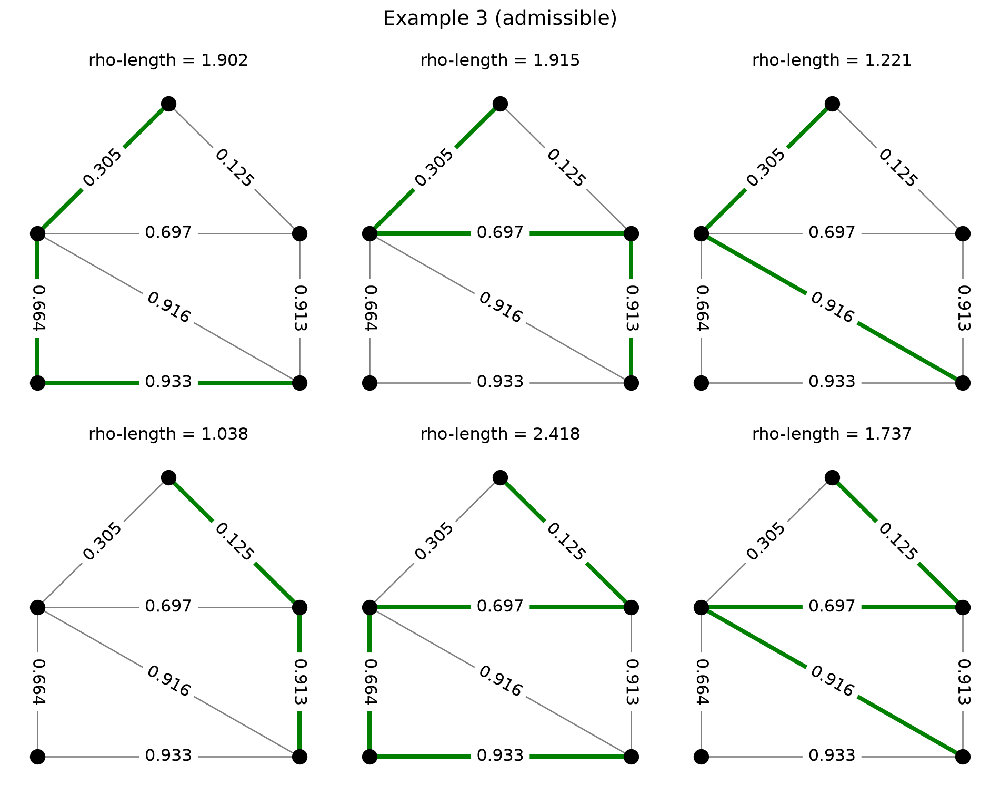
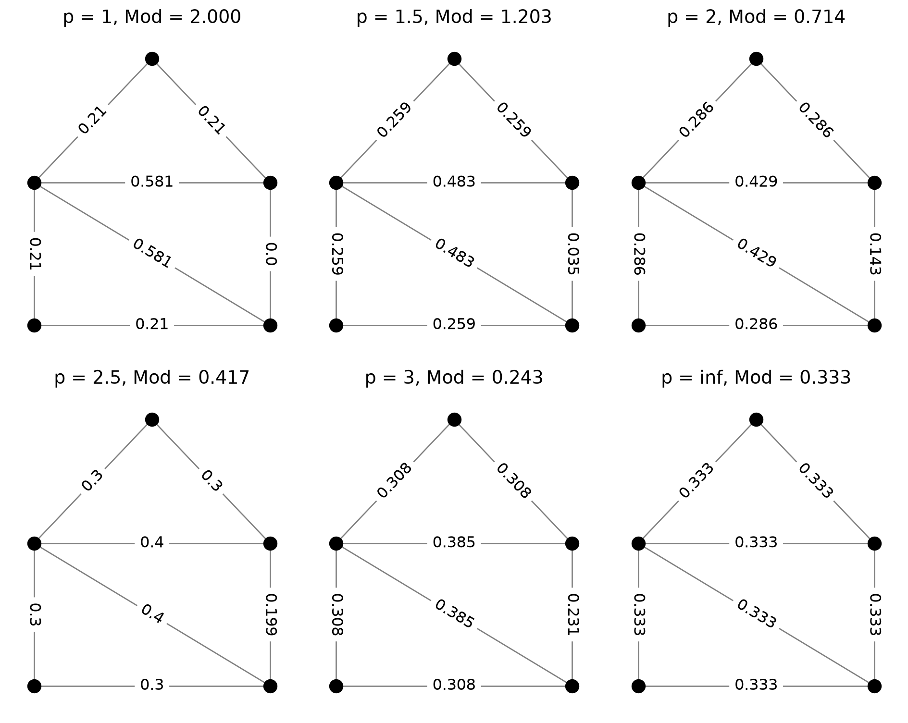
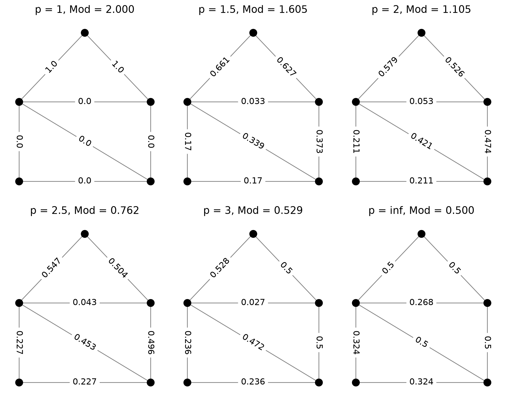

import matplotlib.pyplot as plt
import networkx as nx
import numpy as np
from discrete_modulus import demo2 Intro to Modulus
2.1 Families of objects
The goal of this book is to introduce a collection of Python routines to explore the concept of the modulus of a family of objects \(\Gamma\) on a discrete graph \(G=(V,E)\). Roughly speaking, modulus is a framework for quantifying the “richness” of the family \(\Gamma\). Before we define modulus, therefore, it make sense to consider what is meant by a family of objects. As will become apparent in later chapters, there aren’t many obvious constraints on the type of graph considered. For example, the graph may be finite or infinite, it may be directed or undirected, it may even contain parallel edges or self loops. Modulus is a flexible framework that can be adapted to many settings. However, for developing an intuition about modulus, it helps to consider something concrete; for now, consider a finite, simple, undirected graph \(G\).
Similarly, there is a great deal of flexibility in what is considered to be an “objects”. A good starting point is to consider \(\Gamma\) to be some collection of subsets of edges. That is, \(\Gamma\subseteq 2^E\). While it is certainly possible to define more complicated notions of “object,” families of edge subsets are already sufficiently rich to demonstrate the modulus framework. For now, then, we shall think of \(\Gamma\) as a collection of subsets of edges. Some possible choices to keep in mind are:
- the family of all paths connecting two specified distinct nodes
- the family of all cuts separating two specified distinct nodes
- the family of all spanning trees of \(G\)
- the family of all cycles in \(G\)
- the family of all triangles in \(G\)
- the family of all stars in \(G\)
In each of these cases, we may identify each object \(\gamma\) in the family \(\Gamma\) with the set of edges used by the object. For example, a path can be identified with the collection of edges it crosses. A convenient way to keep track of this information is via the \(\Gamma\times E\) usage matrix \(\mathcal{N}\), whose entries are defined as
\[ \mathcal{N}(\gamma,e) := \begin{cases} 1 & \text{if }e\in\gamma,\\ 0 & \text{otherwise}. \end{cases} \]
2.1.1 Example: the family of triangles
The following code cell produces the \(\mathcal{N}\) matrix for the family of triangles on a particular graph. Notice that, in order to write \(\mathcal{N}\) as a two-dimensional array of numbers, we need to choose some ordering for the edges and objects. These orderings can be chosen arbitrarily, as long as they are used consistently.
The code also draws the three triangles of the graph. The labels on the edges show the edge enumeration. The figure on the left corresponds to the first row of \(\mathcal{N}\), the middle figure to the second row, and the right figure to the third row.
# the demo graph
G, pos = demo.slashed_house_graph()
# enumerate the edges
for i, (u,v) in enumerate(G.edges()):
G[u][v]['enum'] = i
# find all triangles
# NOTE: this would be a silly thing to do on a big graph
triangles = []
n = 5
for i in range(n-2):
for j in range(i+1, n-1):
for k in range(j+1, n):
if j in G[i] and k in G[j] and i in G[k]:
triangles.append(((i, j), (j, k), (k, i)))
plt.figure(figsize=(10,4))
# draw the triangles
for i, T in enumerate(triangles):
plt.subplot(1,3,i+1)
labels = {(u, v): d['enum'] for u, v, d in G.edges(data=True)}
nx.draw(G, pos, node_size=100, node_color='black', edge_color='gray')
nx.draw_networkx_edges(G, pos, edgelist=T, width=3)
nx.draw_networkx_edge_labels(G, pos, edge_labels=labels, font_size=12)
plt.tight_layout()
# build the N matrix
n_edges = len(G.edges())
n_triangles = len(triangles)
N_tri = np.zeros((n_triangles, n_edges))
for i, T in enumerate(triangles):
for u,v in T:
j = G[u][v]['enum']
N_tri[i, j] = 1
print('N_tri = ')
print(N_tri)N_tri =
[[1. 0. 1. 0. 1. 0. 0.]
[0. 0. 1. 1. 0. 1. 0.]
[0. 1. 0. 1. 0. 0. 1.]]
2.1.2 Example: a family of simple paths
Consider, instead, the family of simple paths that connect the top vertex of the previous graph to the bottom-right vertex. The following code generates and prints the \(\mathcal{N}\) matrix for this family, along with a corresponding series of pictures.
# find all simple paths
# NOTE: again, not a good idea for large graphs
paths = list(nx.all_simple_paths(G, 1, 3))
plt.figure(figsize=(10,8))
# draw the paths
for i, path in enumerate(paths):
plt.subplot(2,3,i+1)
edges = [(path[i], path[i+1]) for i in range(len(path)-1)]
labels = {(u, v): d['enum'] for u, v, d in G.edges(data=True)}
nx.draw(G, pos, node_size=100, node_color='black', edge_color='gray')
nx.draw_networkx_edges(G, pos, edgelist=edges, width=3)
nx.draw_networkx_edge_labels(G, pos, edge_labels=labels, font_size=12)
plt.tight_layout()
# build the N matrix
n_edges = len(G.edges())
n_paths = len(paths)
N_path = np.zeros((n_paths, n_edges))
for i, path in enumerate(paths):
for u,v in [(path[k], path[k+1]) for k in range(len(path)-1)]:
j = G[u][v]['enum']
N_path[i, j] = 1
print('N_path = ')
print(N_path)N_path =
[[1. 1. 0. 0. 0. 0. 1.]
[1. 0. 1. 0. 0. 1. 0.]
[1. 0. 0. 1. 0. 0. 0.]
[0. 0. 0. 0. 1. 1. 0.]
[0. 1. 1. 0. 1. 0. 1.]
[0. 0. 1. 1. 1. 0. 0.]]
2.2 Admissible densities: “Everybody pays a dollar”
The next step in the definition of modulus is to develop the concept of admissible density. Suppose we are given a graph \(G\) and the usage matrix \(\mathcal{N}\) for a family of objects \(\Gamma\). In later chapters, we shall see more exotic families of objects whose usage matrices take values other than \(0\) and \(1\) so, in order to keep the discussion general, we assume that \(\mathcal{N}\) is a \(\Gamma\times E\) real matrix with non-negative entries.
A density on \(G\) is a non-negative vector \(\rho\in\mathbb{R}^E_{\ge 0}\) that gives some non-negative value \(\rho(e)\) to every edge \(e\in E\). It can be helpful to think of \(\rho(e)\) as a cost per unit usage incurred by using edge \(e\). This induces on each \(\gamma\in\Gamma\) a total usage cost, often referred to as the \(\rho\)-length of \(\gamma\) for historical reasons, defined as
\[ \ell_\rho(\gamma) := \sum_{e\in E}\mathcal{N}(\gamma,e)\rho(e). \]
In words, the \(\rho\)-length of \(\gamma\) is the sum over all edges of the extent to which \(\gamma\) uses \(e\) multiplied by the cost per unit usage assessed by \(\rho\). In the case that all entries of \(\mathcal{N}\) are either 0 or 1, the \(\rho\)-length can be rewritten as
\[ \ell_\rho(\gamma) = \sum_{e\in\Gamma}\rho(e). \]
Now we are ready to define admissibility. A density \(\rho\in\mathbb{R}^E_{\ge 0}\) is said to be admissible for \(\Gamma\) if \(\ell_{\rho}(\gamma)\ge 1\) for every \(\gamma\in\Gamma\). That is: everybody pays a dollar.
Since \(\mathcal{N}\) is a \(\Gamma\times E\) matrix and \(\rho\) is an \(E\)-vector, the product \(\mathcal{N}\rho\) is a \(\Gamma\)-vector whose \(\gamma\) entry is \(\ell_\rho(\gamma)\). Thus, it is often convenient to use the shorthand notation \(\mathcal{N}\rho\ge\mathbf{1}\) to indicated that \(\rho\) is admissible. In this context, the inequality is interpreted element-wise.
2.2.1 Example: densities and triangles
Returning to the example of the family of triangles, the following code generates a set of densities and checks for admissibility. Each row in the figure produced represents a density. In each row, the triangles are colored either green or red depending on whether or not the \(\rho\)-length of that triangle is at least 1. A density is admissible for the triangles if all triangles in that row are colored green.
# seed the random number generator
np.random.seed(88198283)
n_rho = 3
for i in range(n_rho):
plt.figure(figsize=(10, 4))
# generate a random density
rho = np.random.rand(n_edges)
labels = {
(u, v): round(rho[d['enum']], 3) for u, v, d in G.edges(data=True)
}
# compute the rho-lengths
l = N_tri.dot(rho)
# plot the results
for j, T in enumerate(triangles):
plt.subplot(1,3,j+1)
if l[j] >= 1:
color = 'green'
else:
color = 'red'
nx.draw(G, pos, node_size=100, node_color='black', edge_color='gray')
nx.draw_networkx_edges(G, pos, edgelist=T, width=3, edge_color=color)
nx.draw_networkx_edge_labels(G, pos, edge_labels=labels, font_size=12)
plt.title('rho-length = {:.3f}'.format(l[j]))
title = 'Example {}'.format(i+1)
if np.all(l>=1):
title += ' (admissible)'
else:
title += ' (not admissible)'
plt.suptitle(title, fontsize='x-large')
plt.tight_layout()
plt.subplots_adjust(top=0.75)


2.2.2 Example: densities and paths
The code below does the same thing, but for the path family we considered earlier.
# seed the random number generator
np.random.seed(88198283)
n_rho = 3
for i in range(n_rho):
plt.figure(figsize=(10, 8))
# generate a random density
rho = np.random.rand(n_edges)
labels = {
(u, v): round(rho[d['enum']], 3) for u, v, d in G.edges(data=True)
}
# compute the rho-lengths
l = N_path.dot(rho)
# plot the results
for j, path in enumerate(paths):
plt.subplot(2,3,j+1)
edges = [(path[k], path[k+1]) for k in range(len(path)-1)]
if l[j] >= 1:
color = 'green'
else:
color = 'red'
nx.draw(G, pos, node_size=100, node_color='black', edge_color='gray')
nx.draw_networkx_edges(
G, pos, edgelist=edges, width=3, edge_color=color
)
nx.draw_networkx_edge_labels(G, pos, edge_labels=labels, font_size=12)
plt.title('rho-length = {:.3f}'.format(l[j]))
title = 'Example {}'.format(i+1)
if np.all(l>=1):
title += ' (admissible)'
else:
title += ' (not admissible)'
plt.suptitle(title, fontsize='x-large')
plt.tight_layout()
plt.subplots_adjust(top=0.9)


2.3 Modulus of a family
Once the graph \(G\), the family of objects \(\Gamma\) and the usage matrix \(\mathcal{N}\) are defined, the definition of modulus is easy. (Interpretations of modulus are more complex and are discussed in later chapters of this book.) In optimization notation, the modulus of \(\Gamma\) is defined to be the value of the problem
\[ \begin{split} \text{minimize}\quad&\mathcal{E}_p(\rho)\\ \text{subject to}\quad&\rho\in\mathbb{R}^E_{\ge 0}\\ &\mathcal{N}\rho\ge\mathbf{1}. \end{split} \]
The symbol \(\mathcal{E}_p\) is called the energy functional or simply the energy for modulus, and is parameterized by a number \(p\in[1,\infty]\). For this reason, modulus is often referred to as \(p\)-modulus or, when a specific \(p\) has been chosen, as \(1\)-modulus, \(2\)-modulus, \(\infty\)-modulus, etc. In the context of modulus, a non-negative vector \(\rho\in\mathbb{R}^E_{\ge 0}\) is called a density and the \(p\)-energy of a density is defined to be
\[ \mathcal{E}_p(\rho) := \begin{cases} \sum\limits_{e\in E}\rho(e)^p &\text{ if }1\le p<\infty,\\ \max\limits_{e\in E}\rho(e) &\text{ if }p=\infty. \end{cases} \]
That is, the \(p\)-energy of a density is just the sum of its \(p\)th powers on all edges of the graph if \(p<\infty\) and is the maximum value of \(\rho\) over all edges if \(p=\infty\).
The value of the optimization problem above is referred to as the \(p\)-modulus of the family \(\Gamma\) and is denoted \(\text{Mod}_p(\Gamma)\). If \(\rho=\rho^*\) is a minimizer, then \(\rho^*\) is called an optimal density or extremal density.
2.3.1 Example: triangle modulus
Modulus, as defined above, is an example of a convex optimization problem. Therefore, at least for small graphs, modulus can be computed using any software tool that can solve convex optimization problems. An example of a function for computing modulus in this way is matrix_modulus found in discrete_modulus/algorithms.py. Given the \(\mathcal{N}\) matrix along with the exponent \(p\), this function finds a numerical approximation the modulus along with an optimal \(\rho^*\). The code below computes the modulus of triangles on our example graph for a few different values of \(p\). The value \(\text{Mod}_p(\Gamma)\) is printed above each plot, while the values of the optimal density \(\rho^*\) are shown on the edges.
from discrete_modulus.algorithms import matrix_modulus
plt.rcParams['font.size'] = 12
plt.figure(figsize=(10,8))
# loop over a few p values
for i, p in enumerate((1, 1.5, 2, 2.5, 3, np.inf)):
# compute the modulus
mod, rho, _ = matrix_modulus(N_tri, p)
# draw rho values on graph
plt.subplot(2,3,i+1)
labels = {
(u, v): round(rho[d['enum']], 3) for u, v, d in G.edges(data=True)
}
nx.draw(G, pos, node_size=100, node_color='black', edge_color='gray')
nx.draw_networkx_edge_labels(G, pos, edge_labels=labels, font_size=12)
plt.title('p = {}, Mod = {:.3f}'.format(p, mod))
plt.tight_layout()
2.3.2 Example: path modulus
The code above requires only a small modification if we wish to compute the modulus of the family of paths from top to lower right.
plt.figure(figsize=(10,8))
# loop over a few p values
for i, p in enumerate((1, 1.5, 2, 2.5, 3, np.inf)):
# compute the modulus
mod, rho, _ = matrix_modulus(N_path, p)
# draw rho values on graph
plt.subplot(2,3,i+1)
labels = {
(u, v): round(rho[d['enum']], 3) for u, v, d in G.edges(data=True)
}
nx.draw(G, pos, node_size=100, node_color='black', edge_color='gray')
nx.draw_networkx_edge_labels(G, pos, edge_labels=labels, font_size=12)
plt.title('p = {}, Mod = {:.3f}'.format(p, mod))
plt.tight_layout()
2.4 Where to from here?
Modulus is better thought of as a general framework for understanding families of objects than as a single rigid theory. The ideas presented above can be generalized in many different and interesting ways, only some of which are covered in the chapters that follow. Before moving on, however, we will introduce two useful generalizations. First, if \(G\) is a weighted graph with nonnegative weights \(\sigma\in\mathbb{R}^E_{>0}\), it is common to define a weighted \(p\)-modulus, \(\text{Mod}_{p,\sigma}(\Gamma)\), wherein the energy \(\mathcal{E}_p\) is replaced by
\[ \mathcal{E}_{p,\sigma}(\rho) := \begin{cases} \sum\limits_{e\in E}\sigma(e)\rho(e)^p &\text{ if }1\le p<\infty,\\ \max\limits_{e\in E}\sigma(e)\rho(e) &\text{ if }p=\infty. \end{cases} \]
Second, as described before, it is also useful to consider more general usage matrices \(\mathcal{N}\) that may take nonnegative values other than \(0\) and \(1\). This allows the consideration of objects that may have multiplicity on certain edges, or may spread fractional usage among several edges. In any case, the modulus problem always looks the same:
\[ \begin{split} \text{minimize}\quad&\mathcal{E}_{p,\sigma}(\rho)\\ \text{subject to}\quad&\rho\in\mathbb{R}^E_{\ge 0}\\ &\mathcal{N}\rho\ge\mathbf{1}. \end{split} \]
The energy is determined by the parameter \(p\) and weights \(\sigma\) while the constraints are determined by the usage matrix \(\mathcal{N}\). The matrix_modulus function can compute this more general concept of modulus.
The remainder of this book delves more deeply into modulus, its various interpretations, and algorithms for computing it.
Other resources for understanding modulus and its applications can be found in the following papers.
- General theory: (Albin et al. 2015, 2017)
- Interpretations of modulus: (Albin and Poggi-Corradini 2016; Albin et al. 2019, 2021)
- Applications of modulus: (Albin et al. 2018; Shakeri et al. 2016, 2017, 2018)